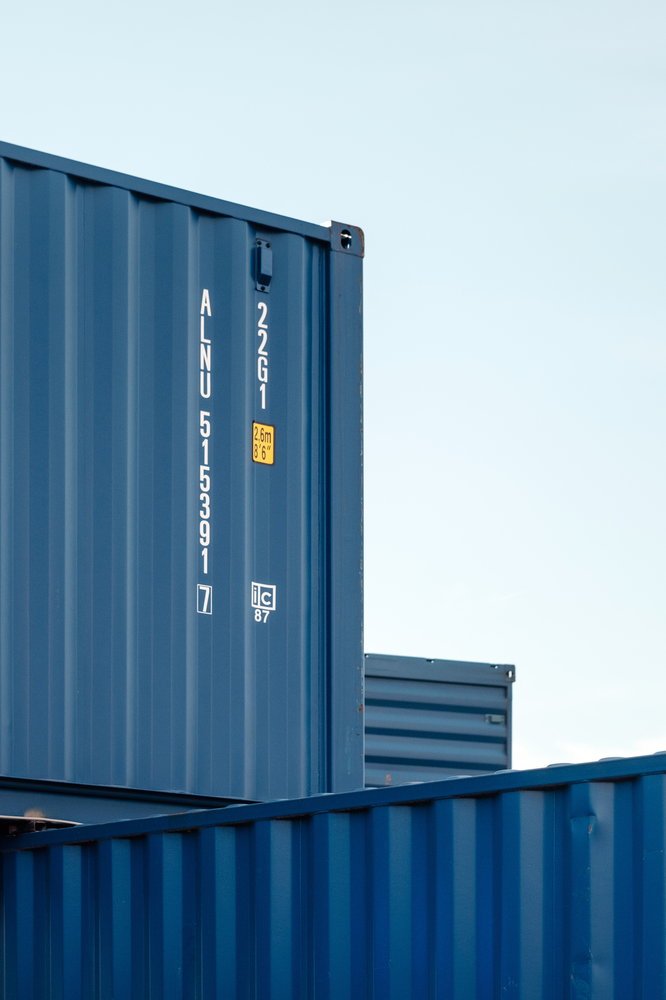

title: Cloud Native C++: A Modern Architecture for a Modernized Language class: wrapper <!--, animation-fade--> layout: true <!-- This slide will serve as the base layout for all your slides --> <!-- .bottom-bar[ {{title}} ] --> --- class: center, middle # {{title}} --- class: center, middle, twitter ### <https://doomhammer.info/talks/codedive2019> # Piotr Gaczkowski  <https://github.com/DoomHammer> | <svg aria-hidden="true" focusable="false" data-prefix="fab" data-icon="twitter" class="svg-inline--fa fa-twitter fa-w-16" role="img" xmlns="http://www.w3.org/2000/svg" viewBox="0 0 512 512" height="1em"><path fill="currentColor" d="M459.37 151.716c.325 4.548.325 9.097.325 13.645 0 138.72-105.583 298.558-298.558 298.558-59.452 0-114.68-17.219-161.137-47.106 8.447.974 16.568 1.299 25.34 1.299 49.055 0 94.213-16.568 130.274-44.832-46.132-.975-84.792-31.188-98.112-72.772 6.498.974 12.995 1.624 19.818 1.624 9.421 0 18.843-1.3 27.614-3.573-48.081-9.747-84.143-51.98-84.143-102.985v-1.299c13.969 7.797 30.214 12.67 47.431 13.319-28.264-18.843-46.781-51.005-46.781-87.391 0-19.492 5.197-37.36 14.294-52.954 51.655 63.675 129.3 105.258 216.365 109.807-1.624-7.797-2.599-15.918-2.599-24.04 0-57.828 46.782-104.934 104.934-104.934 30.213 0 57.502 12.67 76.67 33.137 23.715-4.548 46.456-13.32 66.599-25.34-7.798 24.366-24.366 44.833-46.132 57.827 21.117-2.273 41.584-8.122 60.426-16.243-14.292 20.791-32.161 39.308-52.628 54.253z"></path></svg> [@doomhammerng](https://twitter.com/doomhammerng) <https://doomhammer.info> --- class: wrapper, center, middle ### <https://doomhammer.info/talks/codedive2019> # Adrian Ostrowski <https://github.com/aostrowski> --- class: center, middle, twitter # What is Cloud Native and Why Should We Care? --- class: twitter background-image: url(img/pero-kalimero.jpg) # What is Cloud Native? -- Cloud Native is the XXI century rediscovery of a mainframe. -- # Why should we care? -- Because Google uses it! --- class: center, middle, twitter # Let's Start Again --- class: twitter background-image: url(img/pero-kalimero.jpg) # What is Cloud Native? -- Cloud Native is a vendor agnostic way to deliver scalable and highly available applications. -- # Why should we care? -- It helps to achieve business requirements in a way that minimizes vendor lock-in. --- class: twitter # A brief history of application architectures -- - Monolithic application running on CPU -- - Monolithic application running on an OS -- - Client-server application -- - Service Oriented Architecture -- - Microservices --- class: twitter # The benefits of microservices -- - Easier debugging -- - Better scalability -- - Better resource utilization -- - Antifragile systems -- - Statelessness --- class: twitter # A brief history of software deployment strategies -- - Manual configuration -- - Automated configuration -- - Preconfiguration with Virtual Machine images -- - Containers as a lighter alternative to Virtual Machines --- class: twitter # Why the name containers?  --- class: twitter # The benefits of containers - small overhead compared to Virtual Machines - a standard interface to build and run applications - configuration bundled with an application - building, testing, and production using the same artifacts - a common interface for all technologies --- class: twitter # Putting containers and microservices together - you can use containers without microservices and the other way round - containers and microservices complement each other - they both form the basis for a Cloud Native approach --- class: twitter, split50 background-image: url(img/dominik-schroder.jpg) # Cloud Native applications use standard interfaces to abstract common problems .left-pane[ - upgrades - scalability - deployment strategies - restarts ] .right-pane[ - configuration - high availability - load balancing - ... ] --- class: twitter, split50 # Cloud Native Computing Foundation Graduated CNCF projects: .left-pane[ - Kubernetes - Prometheus - *Envoy* - CoreDNS ] .right-pane[ - containerd - Fluentd - Jaeger - Vitesse ] --- class: twitter # Cloud Native Computing Foundation - 15 incubating CNCF projects as of now -- - 20 sandbox CNCF projects as of now -- - The entire CNCF portfolio consists of 1,277 projects with a market cap of $14.55T and funding of $63.28B --- class: twitter # Back to Mainframe (or why is Cloud Native better?) -- You don't have to learn COBOL to write Cloud Native applications! -- You can use C++. -- And a modern one as well! --- background-image: url(img/snare_drum.gif) background-size: 100% 100% --- class: wrapper, center, middle # Let's make a microservice! --- background-image: url(img/icons8-team-seDjj4dmC9s-unsplash.jpg) background-size: cover ??? - What makes a microservice? - Core application + supporting infrastructure --- # Core App ??? Ideally only business logic plus communication -- - a generator for Ubuntu-like release names ??? adjective plus an animal name -- - input: the first letter, e.g. `P` -- - possible output: `Pretty Pig` ??? One of the proposals written on their Wiki --- class: wrapper, center, middle # C++ REST SDK <https://github.com/Microsoft/cpprestsdk/> --- ```C++ using namespace ::web; using namespace ::web::http; using jstring = json::value::string; void handle_request(http_request req) { auto parameters = uri::split_query(req.request_uri().query()); if (auto kvIt = parameters.find(U("letter")); kvIt == end(parameters)) { auto err = U("Missing first letter"); respond(req, status_codes::BadRequest, jstring(err)); } else { respond(req, status_codes::OK, jstring(generate_code_name(kvIt->second))); } } ``` --- ```C++ void respond(const http_request &request, const status_code &status, const json::value &response) { json::value resp; resp[U("status")] = json::value::number(status); resp[U("response")] = response; request.reply(status, resp); } int main() { auto listener = listener::http_listener( U("http://0.0.0.0/name_generator")); listener.open().wait(); listener.support(methods::GET, handle_request); // ... } ``` ??? Simple service to generate Ubuntu-like names (incomplete code) - code name generation still TBD - listener.close() would need to be called - logic for joining the listener thread would need to be added --- class: wrapper, center, middle # Are we there yet? ??? The service works, others now use it, but... --- class: wrapper, center, middle # No time to REST! ??? It's C++, so text-based REST can be too slow. --- class: wrapper, center, middle <https://grpc.io/> ??? - with gRPC you can easily communicate with SW in other languages --- class: wrapper, center, middle # Protocol Buffers <img src="img/logos/google_developers.png" style="height: 250px" /> <https://developers.google.com/protocol-buffers/> ??? - gRPC can use other payloads too (e.g. FlatBuffers instead of Protobuf), but Protobuffs are field-tested and don't require extra work. --- ```protobuf service NameGeneratorService { rpc GenerateCodeName (GenerationRequest) returns (GenerationResponse); } message GenerationRequest{ string letter = 1; } message GenerationResponse { string reply = 1; } ``` ??? - client and service interface code are autogenerated - service impl. follows --- ```C++ class NameGenerator final : public NameGeneratorService::Service { public: auto GenerateCodeName(::grpc::ServerContext* context, const GenerationRequest* in, GenerationResponse* response) -> ::grpc::Status override { if (!is_valid_input(in->letter()) return { ::grpc::StatusCode::INVALID_ARGUMENT }; } response->set_reply(generate_code_name(in->letter()[0])); return {}; } }; ``` --- ```C++ int main(int argc, char** argv) { auto server_address = "0.0.0.0:31337"; auto service = NameGenerator{}; auto builder = ::grpc::ServerBuilder{}; builder.AddListeningPort(server_address, grpc::InsecureServerCredentials()); builder.RegisterService(&service); std::unique_ptr<grpc::Server> server(builder.BuildAndStart()); server->Wait(); } ``` --- class: wrapper, center, middle # But some folks still use the REST version! --- class: wrapper, center, middle # Let's refocus from code to infrastructure --- class: wrapper, center, middle # <span>We need an envoy to proxy between REST and our new service</span> --- class: wrapper, center, middle # <span style="color:gray">We need an </span><span>envoy</span><span style="color:gray"> to </span><span>proxy</span><span style="color:gray"> between REST and our new service</span> --- class: wrapper, center, middle  <https://www.envoyproxy.io/> ??? - designed by Lyft for its cloud native apps - open source - high-performance, written in C++11 - suits standalone services as well as big service meshes --- background-image: url(img/lovely\_combination.jpg) background-size: 100% 100% ??? Sidecar Proxy pattern - just like sidecars are attached to motorcycles - provides supporting features (like better balance and more seats) - Envoy attaches to the app - name of image is Lovely Combination --- background-image: url(img/diagrams/Sidecar.svg) background-size: 100% 100% ??? - Envoy deployed alongside your app (one to one) - app interacts with the outside world through the proxy - this limits app's knowledge of outside world and simplifies it - apps don’t have to include lots of libraries, dependencies, transitive dependencies - they don't even have to know about Envoy - app developers don't worry about implementing many aspects of distributed systems - Envoy handles them --- # Envoy as a REST to gRPC Bridge -- ```yaml filter_chains: - filters: - name: envoy.http_connection_manager typed_config: "@type": type.googleapis.com/envoy.config.filter.network. ↩ http_connection_manager.v2.httpconnectionmanager codec_type: auto route_config: name: local_route virtual_hosts: - name: local_service domains: ["*"] routes: ``` --- # Envoy as a REST to gRPC Bridge, cont'd ```yaml route_config: virtual_hosts: - name: local_service routes: - match: prefix: "/" grpc: {} route: { cluster: grpc_service } http_filters: - name: envoy.router typed_config: {} ``` --- # Envoy as a REST to gRPC Bridge, cont'd ```yaml clusters: - name: grpc_service connect_timeout: 0.250s type: static lb_policy: round_robin http2_protocol_options: {} load_assignment: ``` --- # Envoy as a REST to gRPC Bridge, cont'd ```yaml load_assignment: cluster_name: grpc_service endpoints: - lb_endpoints: - endpoint: address: socket_address: address: 127.0.0.1 port_value: 31337 ``` --- class: wrapper, center, middle # Is that all? ??? Microservices require more from infrastructure And Envoy delivers --- # Circuit Breaking ??? - microservices make calls to other microservices all the time - what to do when a service is busy or unable to respond timely? - long waits can cascade through other microservices - solution is to use a Circuit Breaker - when it sees the service fails to process requests, assume the service is broken and short circuit -- In the `clusters` section: ```yaml circuit_breakers: thresholds: - priority: DEFAULT max_connections: 1000 max_requests: 1000 max_pending_requests: 1000 ``` ??? - example on how to break on load - HTTP/1.1 uses max connections - HTTP/2 uses max\_requests - Envoy doesn't provide an option to break on latency - this can be emulated by combining with Automatic Retries (those have latency limits) --- # Automatic Retries ??? - In many cases failed requests can be retried. -- In the `routes` section: ```yaml retry_policy: retry_on: "5xx" num_retries: 3 per_try_timeout_ms: 1000 ``` ??? Matches gRPC failures too. -- ```yaml timeout_ms: 2500 ``` ??? Timeout for all retries totalled Rate limiting also supported (return HTTP 429: Too Many Requests) --- # Incremental Blue/Green Deploys ??? Can be load balanced or header-based Let's see the weighted example -- In `routes`: ```yaml - match: prefix: "/name_generator" route: weighted_clusters: clusters: - name: newversion weight: 5 - name: currentversion weight: 95 ``` ??? First deploy and see if it works. Then start by 1%, observe how it behaves. Then switch to 5, 15, 50, 100. --- # What else can Envoy do for us? -- - Service Discovery and Dynamic Configuration ??? - SD: Cluster Discovery Service (CDS) and Endpoint Discovery Service (EDS) - user implements using Rotor or Istio's Pilot - DynConf: SD + RDS (Route DS; done by Pilot) + SSL -- - Load Balancing -- - Health Checking and Outlier Detection ??? - Health checks per whole cluster. Outlier means one faulty instance. -- - Backpressure ??? Reporting an error code for the user (service that called us) to handle -- - Tracing, Monitoring and Log Parsing ??? - Distributed performance traces across all services - Log Parsing (LDS; Listener DS), - Metrics can be aggregated across clusters, services, domains, routes, and nodes -- - Request Shadowing ??? - part or all data is also sent to testing env -- - Handle SSL and TLS ??? both inbound and between services <https://www.envoyproxy.io/docs/envoy/latest/intro/what_is_envoy> --- background-image: url(img/diagrams/Sidecar.svg) background-size: 100% 100% ??? - Envoy as the sidecar provides all those - you as a developer can focus on core functionality <!-- TODOs: - writing C++ microservices made easy: - Abseil (flags, containers, live-at-head), - spdlog (uses fmt under the hood), - few slides about how it will change in the future - coroutines in C++20 - better coroutines (in 23) - networking (in 23?) - expected<t> / improved error handling --> --- class: wrapper, center, middle # All you need is C++ ??? - your service can cooperate with any other language supporting gRPC: Java, Python, JS, Go, and more - but all you need to deploy is written in C++: Envoy, gRPC, Protobuf - you can write microservices in C++ in a simple way - small containers and performance --- class: wrapper, center, middle # Questions? --- class: attributions # Attributions - <a style="background-color:black;color:white;text-decoration:none;padding:4px 6px;font-family:-apple-system, BlinkMacSystemFont, "San Francisco", "Helvetica Neue", Helvetica, Ubuntu, Roboto, Noto, "Segoe UI", Arial, sans-serif;font-size:12px;font-weight:bold;line-height:1.2;display:inline-block;border-radius:3px" href="https://unsplash.com/@pericakalimerica?utm_medium=referral&utm_campaign=photographer-credit&utm_content=creditBadge" target="_blank" rel="noopener noreferrer" title="Download free do whatever you want high-resolution photos from Pero Kalimero"><span style="display:inline-block;padding:2px 3px"><svg xmlns="http://www.w3.org/2000/svg" style="height:12px;width:auto;position:relative;vertical-align:middle;top:-2px;fill:white" viewBox="0 0 32 32"><title>unsplash-logo</title><path d="M10 9V0h12v9H10zm12 5h10v18H0V14h10v9h12v-9z"></path></svg></span><span style="display:inline-block;padding:2px 3px">Pero Kalimero</span></a> - <a style="background-color:black;color:white;text-decoration:none;padding:4px 6px;font-family:-apple-system, BlinkMacSystemFont, "San Francisco", "Helvetica Neue", Helvetica, Ubuntu, Roboto, Noto, "Segoe UI", Arial, sans-serif;font-size:12px;font-weight:bold;line-height:1.2;display:inline-block;border-radius:3px" href="https://unsplash.com/@wirhabenzeit?utm_medium=referral&utm_campaign=photographer-credit&utm_content=creditBadge" target="_blank" rel="noopener noreferrer" title="Download free do whatever you want high-resolution photos from Dominik Schröder"><span style="display:inline-block;padding:2px 3px"><svg xmlns="http://www.w3.org/2000/svg" style="height:12px;width:auto;position:relative;vertical-align:middle;top:-2px;fill:white" viewBox="0 0 32 32"><title>unsplash-logo</title><path d="M10 9V0h12v9H10zm12 5h10v18H0V14h10v9h12v-9z"></path></svg></span><span style="display:inline-block;padding:2px 3px">Dominik Schröder</span></a> - <a style="background-color:black;color:white;text-decoration:none;padding:4px 6px;font-family:-apple-system, BlinkMacSystemFont, "San Francisco", "Helvetica Neue", Helvetica, Ubuntu, Roboto, Noto, "Segoe UI", Arial, sans-serif;font-size:12px;font-weight:bold;line-height:1.2;display:inline-block;border-radius:3px" href="https://unsplash.com/@icons8?utm_medium=referral&utm_campaign=photographer-credit&utm_content=creditBadge" target="_blank" rel="noopener noreferrer" title="Download free do whatever you want high-resolution photos from Icons8 Team"><span style="display:inline-block;padding:2px 3px"><svg xmlns="http://www.w3.org/2000/svg" style="height:12px;width:auto;position:relative;vertical-align:middle;top:-2px;fill:white" viewBox="0 0 32 32"><title>unsplash-logo</title><path d="M10 9V0h12v9H10zm12 5h10v18H0V14h10v9h12v-9z"></path></svg></span><span style="display:inline-block;padding:2px 3px">Icons8 Team</span></a> - <a href="https://www.flickr.com/photos/56553246@N00/5875781519">"Lovely combination"</a><span> by <a href="https://www.flickr.com/photos/56553246@N00">Steve Parker</a></span> is licensed under <a href="https://creativecommons.org/licenses/by/2.0/?ref=ccsearch&atype=html" style="margin-right: 5px;">CC BY 2.0</a><a href="https://creativecommons.org/licenses/by/2.0/?ref=ccsearch&atype=html" target="_blank" rel="noopener noreferrer" style="display: inline-block;white-space: none;margin-top: 2px;margin-left: 3px;height: 16px !important;"></a> --- exclude: true class: wrapper, center, middle # Backup --- exclude: true # Istio - Plays great with Envoy - Control Plane: - Pilot - service discovery for Envoys, traffic management and intelligent routing, resiliency - Mixer - access control, telemetry collection - Citadel - authentication and credential management - Data Plane: - Ingress/Egress Controller for whole service mesh - Services and their corresponding Envoys ??? Resiliency: circuit breaking, timeouts, retries --- exclude: true # What about Netflix services? - They mostly target JVM apps (e.g. Hystrix, Ribbon), - Netflix has limited C++ support (Spectator-cpp is still experimental), - these components often need to be configured in your application code, - their update forces you to update your app, - your app is no longer just about business logic. ??? Spectator-cpp is for instrumenting C++ apps, sending metrics to an Atlas aggregator service. "Hystrix for Circuit Breaker, Eureka for Service Discovery, Ribbon for Load Balancing" Eureka is REST-based. --- class: center, middle, split50 # Thank you! .left-pane[  <https://github.com/DoomHammer> <https://doomhammer.info> ] .right-pane[ <https://github.com/aostrowski> ] ### <https://doomhammer.info/talks/codedive2019>